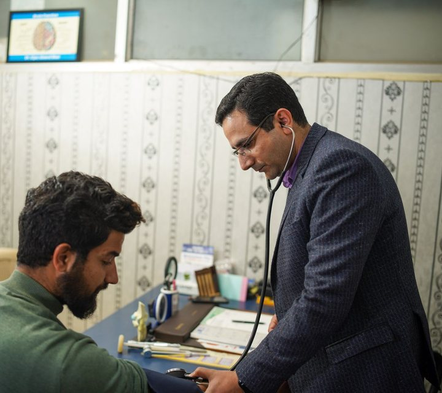
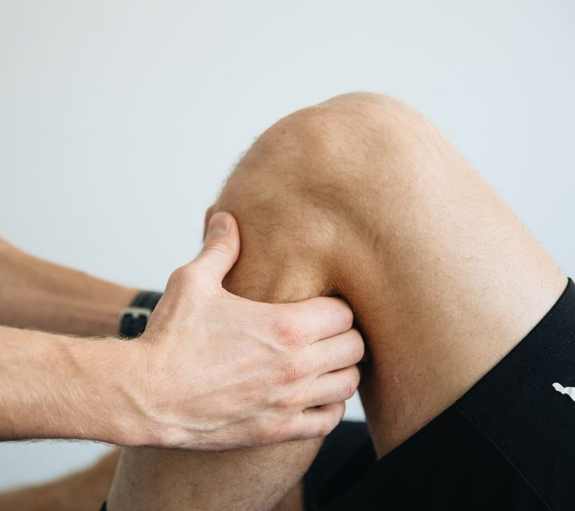
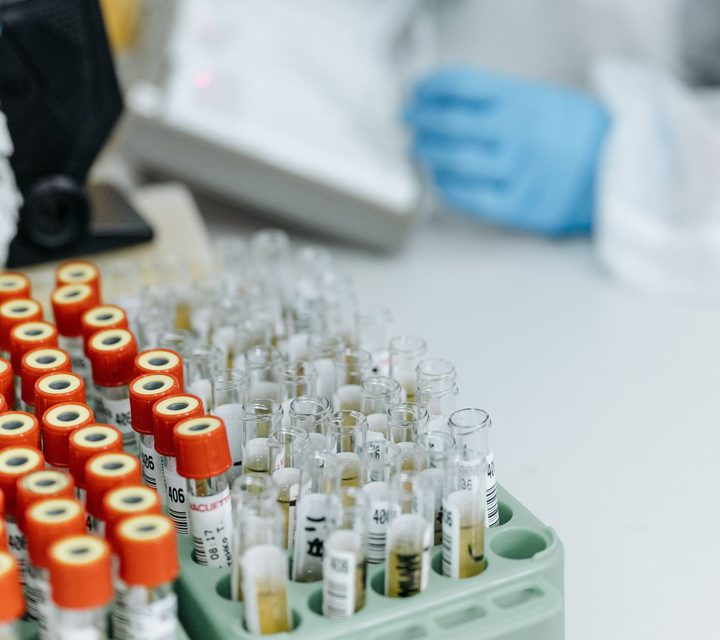

Talk from anywhere

30 min NEWIn as little as 30 min

Home or clinicRecovery sessions
Verified, after hours

Home collectionReports in your records
Cardio, skin, neuro & more
Photos: Pexels & Unsplash (free licence) — illustrative, not Sukoon doctors.